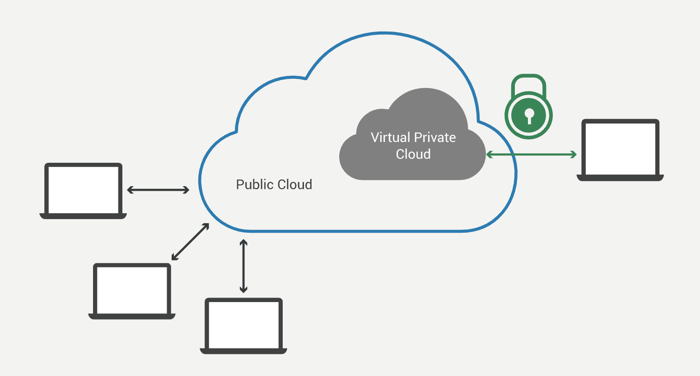
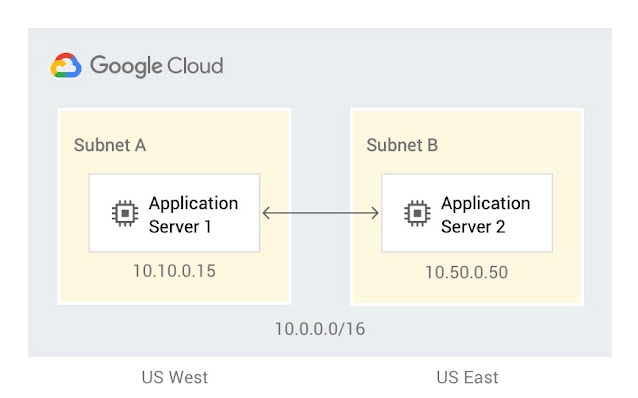
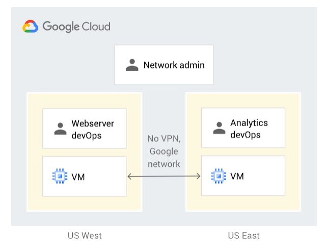
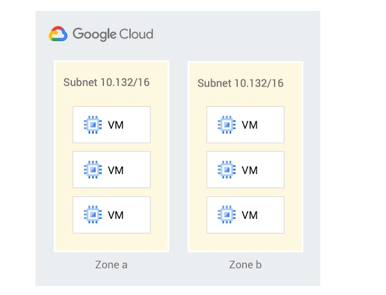
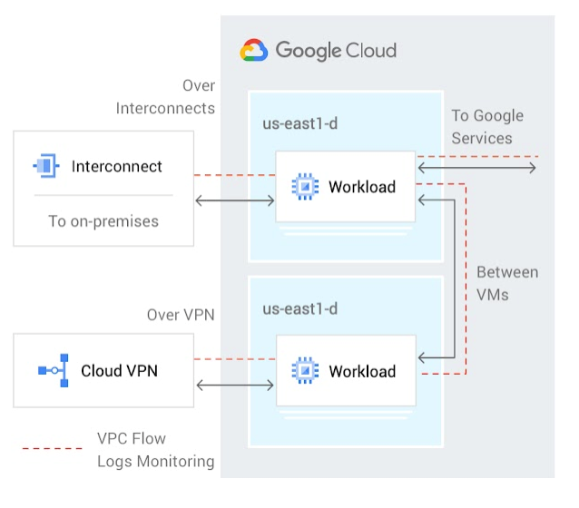
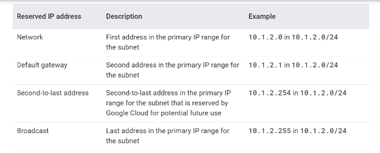
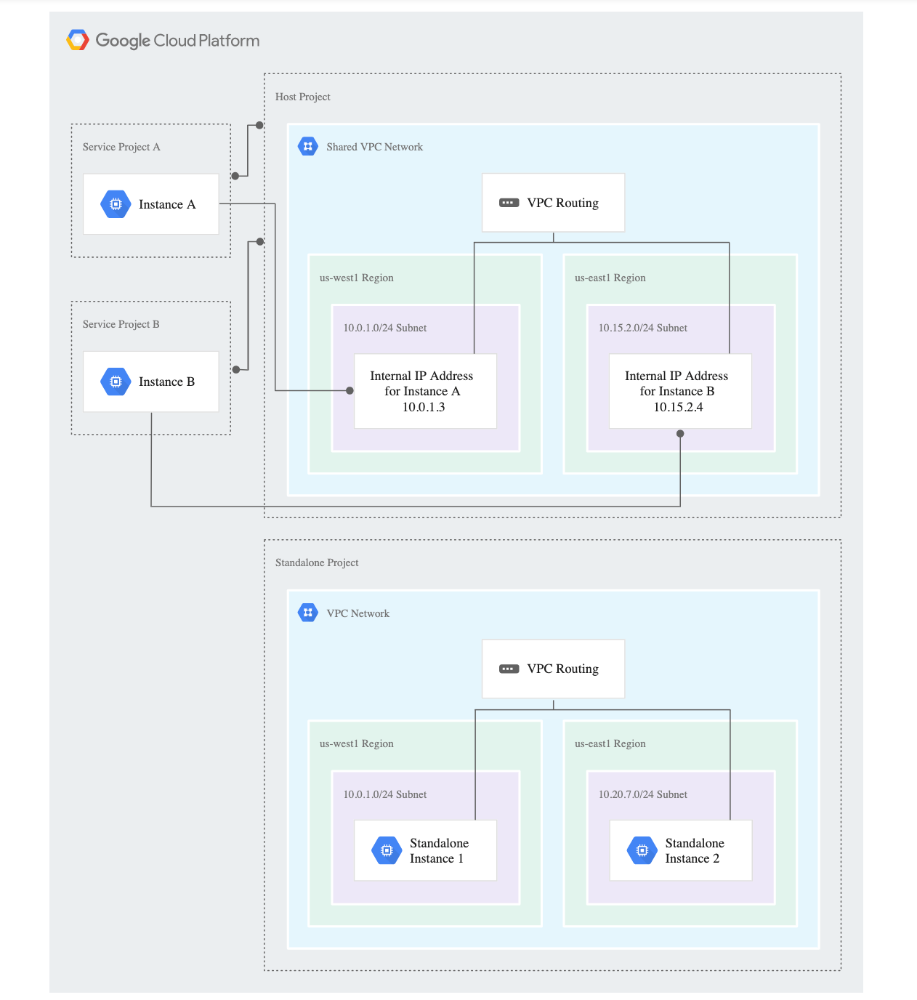
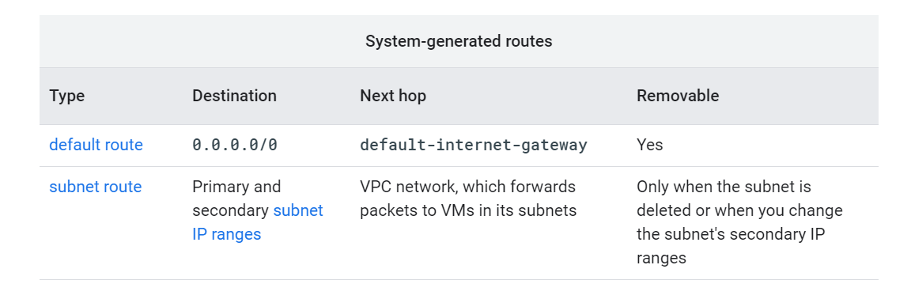
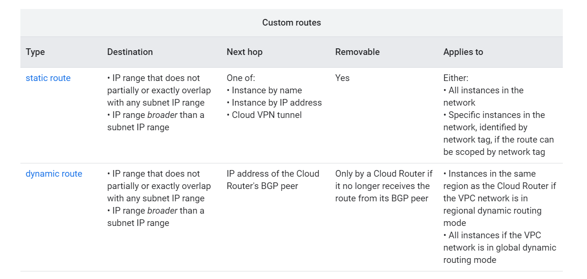
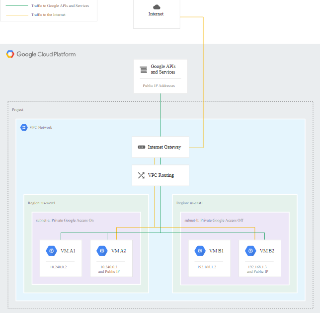

Google Virtual Private Cloud
Tutorial
Introduction
Virtual Private Cloud
VPC is nothing but a private cloud that is being hosted inside a public cloud. The term “Virtual” arrived because the resources are not shared in a public infrastructure unlike the public clouds. Due to such isolation of data, it is called Virtual Private Cloud[2]. For achieving such isolation, technologies like subnets, VLAN(virtual local area network) and VPN(virtual private network) are required.

Source[3]
Virtual Private Cloud instead of Private Cloud
Virtual private cloud[3] provides:
→ Better scalability as the users have the advantage of adding more and more computing resources based on demand.
→ Easy hybrid cloud deployment as connecting a virtual private network to a public cloud becomes very easy with the help of virtual private network.
→ Better performance because the applications and websites hosted on the cloud process and perform better compared to the ones performing on the local servers.
→ Better security as the data or information which is passed to the virtual private cloud is under control of the user itself.
Google Virtual Private Cloud
→ Google VPC[1] is a virtual private cloud which provides networking functionalities and facilities like running code, storing data, hosting websites, etc.
→ It gives you the flexibility to scale and control how workloads connect regionally and globally.
→ When you connect your on-premises or remote resources to Google Cloud, you’ll have global access to your VPCs without needing to replicate connectivity or administrative policies in each region.
→ Get started with Virtual Private Cloud on Google cloud platform
→ Create a Virtual Private Cloud on Google cloud platform
Categories
Global Virtual Private Cloud
Source[1]
Global VPC provides global scope between regions. The benefit of global VPC is that connection between VPC and on-premises resources is not required in every region. No communication takes place through public internet while global VPC spans multiple regions.
Shareable Virtual Private Cloud
Source[1]
Google VPC can also be shareable. It provides shareable configuration between different projects. Despite of isolation within the projects, they maintain a shared private IP space. They also have access to the common services that are provided like Virtual Private Network and Cloud Interconnect.
Expandable Virtual Private Cloud
Source[1]
Google VPC can also be expandable. It provides you with a functionality which allows you to increase the IP space of subnets used in the system without any workload shutdowns. The advantage of expandable VPC is the flexibility it provides along with the growth options using which customer needs are fulfilled.
Transparent Virtual Private Cloud
Source[1]
Transparent google VPC provides you with near real-time logging to monitor your applications and their deployment. VPC flow logs are used for this purpose. Using this process one can analyze the performance of the application and the networking concepts involved in it. Advantage of transparent VPC is that the deployment of the applications are done securely and efficiently.
Features
VPC network
A VPC network is a global resource that consists of a list of regional virtual subnetworks (subnets) in data centers, all connected by a global wide area network.

Source[1]
Projects can contain multiple VPC networks.
Specifications
* VPC networks, including their associated routes and firewall rules, are global resources. They are not associated with any particular region or zone.
* Subnets are regional resources. Each subnet defines a range of IP addresses.
* VPC networks can be connected to other VPC networks in different projects or organizations by using VPC Network Peering.
Networks and subnets
* Each VPC network consists of one or more useful IP range partitions called subnets. Each subnet is associated with a region. VPC networks do not have any IP address ranges associated with them. IP ranges are defined for the subnets.
* When you create a resource in Google Cloud, you choose a network and subnet.
Default network
* Unless you choose to disable it, each new project starts with a default network. The default network is an auto mode VPC network with pre-populated firewall rules.
Subnets and IP ranges
* When you create a subnet, you must define a primary IP address range. You can optionally define secondary IP address ranges: Primary and Secondary.
Reserved IPs
* Every subnet has four reserved IP addresses in its primary IP range. There are no reserved IP addresses in the secondary IP ranges.
Source[1]
Packet Mirroring
Packet mirroring is a feature in which it copies the traffic of the instances which are specified in the Virtual Private Cloud network. Then these copies of traffic are sent to a collector destination for examination. The data captured in this process includes ingress traffic (traffic that enters a network boundary), egress traffic (traffic that exits a network boundary) and packet data specifically payloads and headers. The process of mirroring is conducted on instances of Virtual Machines.
Introduction to Packet Mirroring: Click here
The purpose of this feature is to monitor or analyze your security status. Real world scenarios in which packet mirroring becomes very useful are:
* Enterprise Security (to detect threats or anomalies)
* Application performance monitoring (to detect application performance issues)
The source and destination are specified by a packet mirroring policy. The mirrored source can be the compute engine instances and the collector destination can be an instance group.
VPN
Cloud Virtual Private Network is one of the feature which is used to connect a peer network to virtual private cloud network with the help of an IPsec (Internet Protocol Security) connection. Main objective is to protect the data that travels over internet and provide a secure connection between two networks. Encryption and decryption of the traffic traveling between two networks is done using VPN gateways.
Google cloud provides two types of VPN:
1. HA VPN: It is a high availability cloud VPN used to provide secured connection between networks in a single region. It is configured using two interfaces and two public IPs. In this VPN, only dynamic routing is supported.
2. Classic VPN: It is configured using single interface and a single external IP address. In this VPN, both static routing and dynamic routing are supported.
Firewall
Every Virtual Private Cloud (VPC) network functions as a distributed firewall. While firewall rules are defined at the network level, connections are allowed or denied on a per-instance basis.
You create or modify Google Cloud firewall rules by using the Google Cloud Console, gcloud command-line tool, and REST API.
* Google Cloud doesn't allow certain IP protocols, such as GRE, within a VPC network
* Google Cloud always allows communication between a VM instance and its corresponding metadata server at 169.254.169.254.
* Every network has two implied firewall rules that permit outgoing connections and block incoming connections
* The default network is pre-populated with firewall rules that you can delete or modify.
Specifications
* Each firewall rule applies to incoming (ingress) or outgoing (egress) traffic, not both. For more information, see direction of traffic.
* Firewall rules only support IPv4 traffic. When specifying a source for an ingress rule or a destination for an egress rule by address, you can only use an IPv4 address or IPv4 block in CIDR notation.
* Each firewall rule's action is either allow or deny. The rule applies to traffic as long as it is enforced. For example, you can disable a rule for troubleshooting purposes. When you create a firewall rule, you must select a VPC network.
Google Cloud firewall rules are stateful. After a session has been established, firewall rules allow bidirectional communication. Google Cloud associates incoming packets with corresponding outbound packets by using a connection tracking table.
The maximum number of tracked connections in the firewall rule table depends on the number of stateful connections supported by the machine type of the instance.
Firewall rule components
* The direction of traffic: ingress rules apply to incoming connections from specified sources to Google Cloud targets, and egress rules apply to traffic going to specified destinations from targets.
* A numerical priority, which determines whether the rule is applied. Only the highest priority (lowest priority number) rule whose other components match traffic is applied; conflicting rules with lower priorities are ignored.
* An action on match, either allow or deny, which determines whether the rule permits or blocks traffic.
* The enforcement status of the firewall rule: You can enable and disable firewall rules without deleting them.
* A target, which defines the instances to which the rule applies. A source for ingress rules or a destination for egress rules.
VPC peering
VPC network peering feature allows you to have a private RFC 1918 (Address allocation for private internets) connection between two Virtual Private Cloud networks irrespective of whether they are within the same project or same organization.
Peering is done so that communication between workloads of different VPC networks can take place in a private space (RFC 1918)
Uses
* Used for SaaS ecosystems in google cloud.
* Peering can happen between different organizations having multiple network administrative domains. It makes services available across all networks involved in the organizations.
Advantages
* There are certain advantages of using VPC network peering instead of external IP addresses and VPN to provide connection between networks.
* Network latency: Private networking has lower latency compared to public IP networking which deals with much higher latency. Peering traffic remains in the network of google itself.
* Network security: Service owners do not have to expose their services to public internet and face unnecessary risks.
* Network cost: Networks that are peered can use internal IPs for communication purpose and hence save the egress cost (cost of outgoing network traffic).
Simplify routing with VPC Peering: Click here
Shared VPC
Main objective of shared VPC is that it allows an organization to connect different resources from multiple projects to a common VPC network. This makes the communication between them secured and efficient with the help of internal IPs of the common VPC network.
While using shared VPC, a project is designated as a host project and multiple projects are attached to it which are called service projects.
Source[1]
Concepts
* Shared VPC networks: VPC networks defined in the host project are called shared VPC networks. It is made available as a common shared network for the resources of different projects involved in the organization.
* Host Project: It contains one or more shared VPC networks . A shared VPC admin designates a project as host project.
* Shared VPC admin: Perform tasks like setting up shared VPC, designating host project, attaching service projects to host projects.
* Service project: It is a project that is attached to host project by the admin. Because of this connection, service projects can participate in shared VPC.
* Standalone project: Project that does not participate in shared VPC.
Centralize control with shared VPC: Click here
How to create shared VPC: Click here
Routes
Google Cloud routes define the paths that network traffic takes from a virtual machine (VM) instance to other destinations. These destinations can be inside your Google Cloud Virtual Private Cloud (VPC) network (for example, in another VM) or outside it.
In a VPC network, a route consists of a single destination (CIDR) and a single next hop
VPC networks can include system-generated routes or custom routes.
Source[1]
Source[1]
Static routes
* Static routes can use any of the static route next hops.
* If you use the Google Cloud Console to create a Cloud VPN tunnel that uses policy-based routing or one that is a route-based VPN, static routes for the remote traffic selectors are created for you. For more information, see Cloud VPN networks and tunnel routing.
Dynamic routes
Dynamic routes are managed by one or more Cloud Routers. Their destinations always represent IP ranges outside your VPC network, and their next hops are always BGP peer addresses. A Cloud Router can manage dynamic routes for:
→ Cloud VPN tunnels that use dynamic routing
→ Cloud Interconnect
VPC flow logs
VPC flow logs record a sample of network flows sent from and received by VM instances.
Flow logs can be viewed in cloud logging and one can export logs to any destination that cloud logging export supports.
GCP flow logs are updated every five seconds, providing immediate visibility.
VPC flow logs are used in:
Network monitoring (provides you with real time visibility into network throughput and performance)
* Monitor VPC network
* Perform network diagnosis
* Filter the flow logs by VMs and by applications to understand traffic changes
Forensics (utilize flow logs for network forensics)
* One can examine which IPs talked with whom and when
* Any compromised IPs by analyzing all the incoming and outgoing network flows
Real-time security analysis
* We can leverage the real-time streaming APIs and integrate with SIEM systems (Security Information and Event Management). This provides real time monitoring, correlation of events, analysis and security alerts
Expense optimization (based on analysis, we can optimize network traffic expense)
* Analyze network flows for traffic between regions and zones
* Analyze network flows for traffic to specific countries on internet
* Analyze network flows for top talkers
Properties of VPC flow logs:
* We can enable or disable VPC flow logs for every VPC subnet.
* We can use filters o select which flow logs are excluded from logging and which are exported to external APIs.
Disaster recovery
Creating a detailed DR plan
* Design according to your recovery goals
* Design for end-to-end recovery
* Make your tasks specific
Implementing control measures
Preparing your software
* Verify that you can install your software
* Design continuous deployment for recovery
Implementing security and compliance control
* Configure security the same for the DR and production environments
* Verify your DR security
* Make sure users can log in to the DR environment
* Train users
* Make sure that the DR environment meets compliance requirements
* Use Cloud Storage as part of your daily backup routines
* Manage secrets properly
* Treat recovered data like production data
Making sure your DR plan works
* Maintain more than one data recovery path
* Test your plan regularly
Private access
VM instances that only have internal IP addresses (no external IP addresses) can use Private Google Access.
* They can reach the external IP addresses of Google APIs and services.
* The source IP address of the packet can be the primary internal IP address of the network interface or an address in an alias IP range that is assigned to the interface.
* If you disable Private Google Access, the VM instances can no longer reach Google APIs and services; they can only send traffic within the VPC network.
Supported services
Private Google Access permits access to Cloud and Developer APIs and most Google Cloud services, except for the following services:
* App Engine Memcache
* Filestore
* Memorystore
* Cloud SQL
Implementation
Source[1]
The following list provides details about the above diagram:
* Firewall rules in the VPC network have been configured to allow egress to 0.0.0.0/0 (or at least to the server IPs for Google APIs and services).
* VM A1 can access Google APIs and services, including Cloud Storage, because its network interface is located in subnet-a, which has Private Google Access enabled. Private Google Access applies to the instance because it only has an internal IP address.
* VM B1 cannot access Google APIs and services because it only has an internal IP address and Private Google Access is disabled for subnet-b.
* VM A2 and VM B2 can both access Google APIs and services, including Cloud Storage, because they each have external IP addresses. Private Google Access has no effect on whether or not these instances can access Google APIs and services because both have external IP addresses.
Bring your own IPs
By bringing your own IP addresses(BYOIP), you can accelerate the migration while minimizing downtime, as well as significantly reduce the networking infrastructure costs.
With Google Cloud, your BYOIP prefixes can be broken into blocks as small as 16 addresses (/28), can be distributed to any region, and can also be used for global load balancers, creating more flexibility with the resources you already have.
They needed this feature for two main reasons:
* Hard-coded IPs delaying migration
* Costs of legacy networking infrastructure.
Advantages
Flexible
VPC shows flexibility to scale and control how workloads connect regionally and globally. It is also flexible in letting you increase the IP space of any subnet. It provides a flexible app engine environment on which you can specify a network to deploy your instances of a service.
Secure
Information passed through a VPC stays within a customer’s control without crossing the internet.
Performance
Cloud-hosted websites and applications typically perform better than those hosted on local on-premises servers.
Scalable
Because a VPC is hosted by a public cloud provider, customers can add more computing resources on demand.
Savings (cost efficient)
Because VPCs are within a public cloud, customers still benefit from economies of scale, sharing costs with other organizations without compromising the security.
Easy integration
A VPC can be integrated with other VPCs, the public cloud, or an on-premise infrastructure. This effectively becomes a hybrid cloud.
Seamless upgrades
With all customers operating on the same hardware, the VPC provider can upgrade everyone incrementally and with no downtime. Over time, customers’ workloads actually get more secure and quicker.
Eco-friendliness
A VPC operating within a cloud hosting company leaves much less of a carbon footprint versus running on dedicated hardware, something that can be promoted to new clients.
References
1. https://cloud.google.com/vpc
This is the official website of Google Virtual Private Cloud which has a detailed documentation of the concepts related to google VPC along with its features and functionality.
2. https://www.dsm.net/it-solutions-blog/what-is-a-virtual-private-cloud-and-what-are-its-benefits
This is a blog posted by DSM which is one of the preferred cloud provider in Florida. This blog provides basic information about what is a virtual private cloud and what are the benefits of using it.
Date posted: 9 Aug 2018
3. https://www.cloudflare.com/learning/cloud/what-is-a-virtual-private-cloud/
This is an article provided by Cloudflare, Inc. Cloudflare is an American web-infrastructure and website-security company. This article contains the concept of a virtual private cloud, how it works and why to use a VPC instead of a private network.